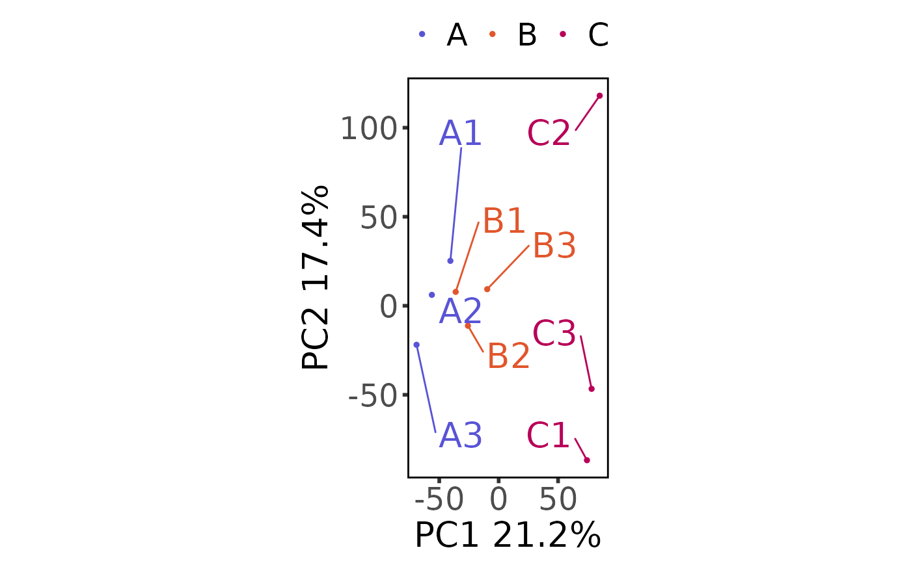
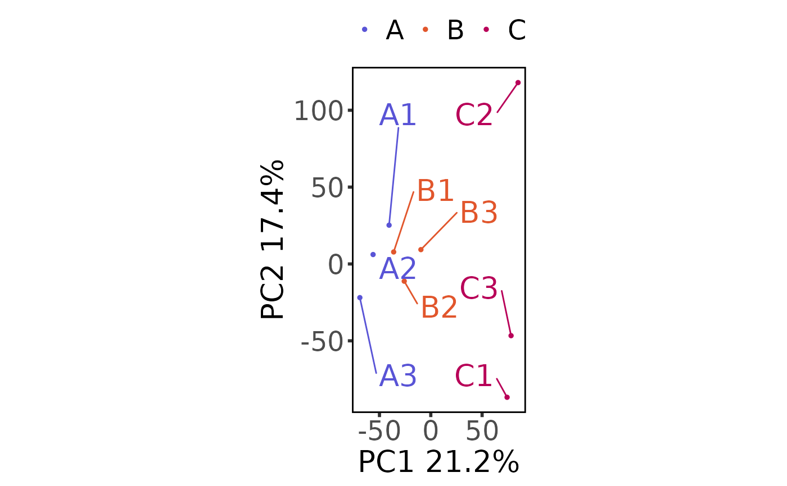

Perform and plot a Principal Components Analysis
Usage
plot_pca(moo_counts, principal_components = c(1, 2), ...)Arguments
- moo_counts
counts dataframe or
multiOmicDataSetcontainingcount_type&sub_count_typein the counts slot- principal_components
vector with numbered principal components to plot. Use 2 for a 2D pca with ggplot, or 3 for a 3D pca with plotly. (Default:
c(1,2))- ...
additional arguments forwarded to method (see Details below)
Details
See the low-level function docs for additional arguments depending on whether you're plotting 2 or 3 PCs:
plot_pca_2d - used when there are 2 principal components
plot_pca_3d - used when there are 3 principal components
Methods
| link to docs | class |
| plot_pca_moo | multiOmicDataSet |
| plot_pca_dat | data.frame |
See also
Other plotters:
plot_corr_heatmap(),
plot_expr_heatmap(),
plot_histogram(),
plot_read_depth(),
print_or_save_plot()
Other PCA functions:
calc_pca(),
plot_pca_2d(),
plot_pca_3d()
Other moo methods:
batch_correct_counts(),
clean_raw_counts(),
diff_counts(),
filter_counts(),
filter_diff(),
normalize_counts(),
plot_corr_heatmap(),
plot_expr_heatmap(),
plot_histogram(),
plot_read_depth(),
run_deseq2(),
set_color_pal()
Examples
# multiOmicDataSet
moo <- multiOmicDataSet(
sample_metadata = nidap_sample_metadata,
anno_dat = data.frame(),
counts_lst = list(
"raw" = nidap_raw_counts,
"clean" = nidap_clean_raw_counts
)
)
plot_pca(moo, count_type = "clean", principal_components = c(1, 2))

# 3D
plot_pca(moo, count_type = "clean", principal_components = c(1, 2, 3))
# dataframe
plot_pca(nidap_clean_raw_counts,
sample_metadata = nidap_sample_metadata,
principal_components = c(1, 2)
)
